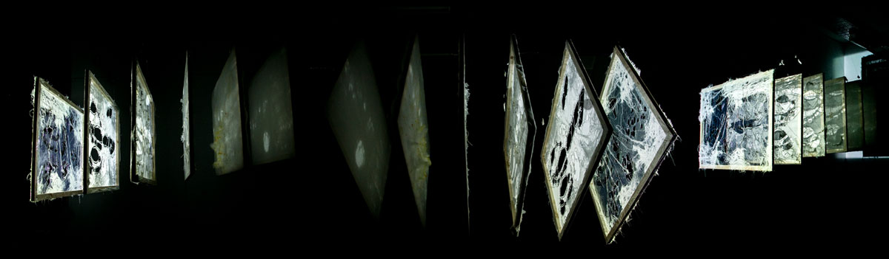
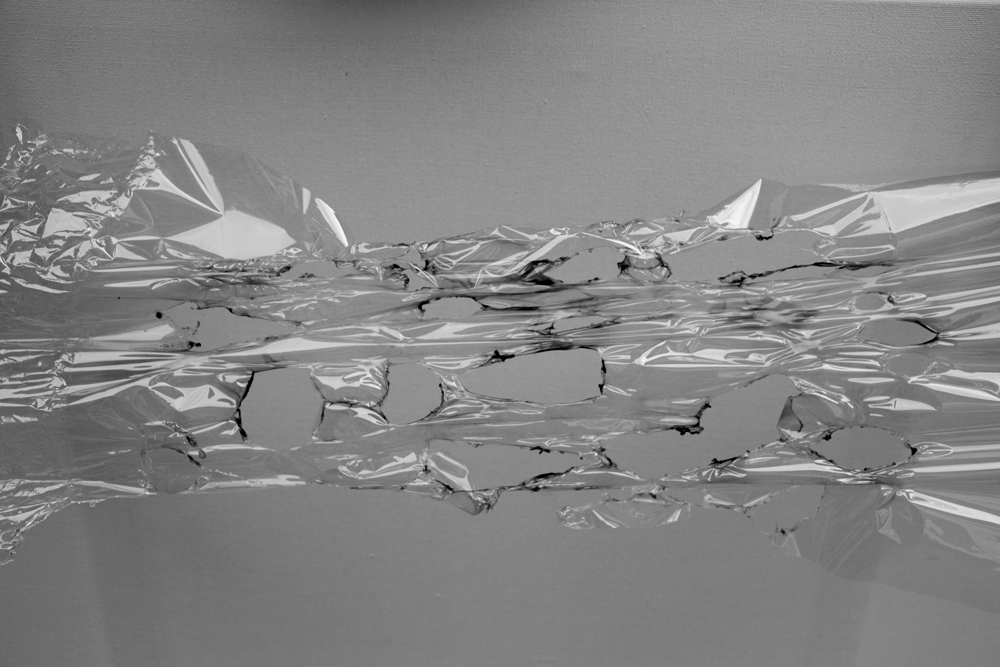
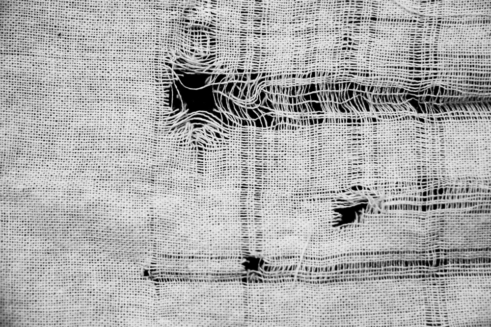

Unbuilding
Three dimensional dynamic installation through the study of the city of Maardu, Estonia, informed by nature research through time, the anthropocene and speculations. Multiple points of view, scale and readings.
With the use of the projector, the installation shows the traces of the actions travelling through time. Each panel shows the actions and reactions by the vegetation: by starting from the perfect canvas the landscape unconvers its true essence through the time. While the first canvases show natural phenomenas, the last two show the effect of human made landscape distruction and the nature strenght to reinvent itself.
 
How many ways can you find to unbuild a piece of fabric? How many ways can it be transformed? Material study through the unthreading, burning and projection of different fabrics and plastics.